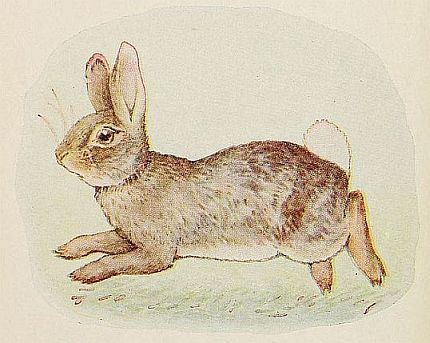

THE STORY OF
A FIERCE BAD RABBIT
|
THE good Rabbit peeps
out of its hole,
| 
|
Title: The Story of a Fierce Bad Rabbit
Author: Beatrix Potter
Release date: March 31, 2014 [eBook #45265]
Language: English
Credits: Produced by David Edwards and the Online Distributed
Proofreading Team at http://www.pgdp.net (This file was
produced from images generously made available by The
Internet Archive)
|

|
THIS is a fierce bad
Rabbit; look at his
savage whiskers, and his
claws and his turned-up tail.
|
This eBook is for the use of anyone anywhere in the United States and most other parts of the world at no cost and with almost no restrictions whatsoever. You may copy it, give it away or re-use it under the terms of the Project Gutenberg License included with this eBook or online at www.gutenberg.org. If you are not located in the United States, you will have to check the laws of the country where you are located before using this eBook.